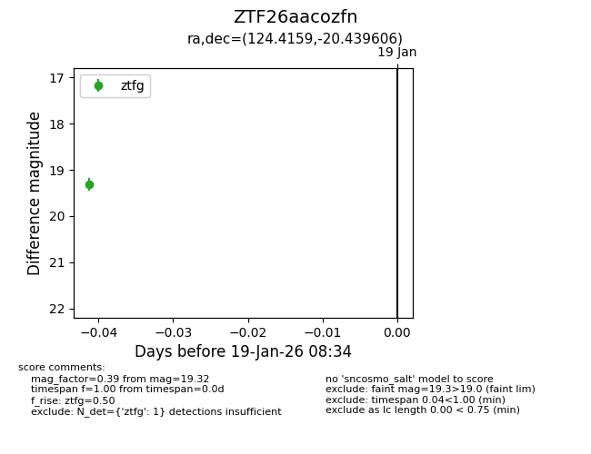
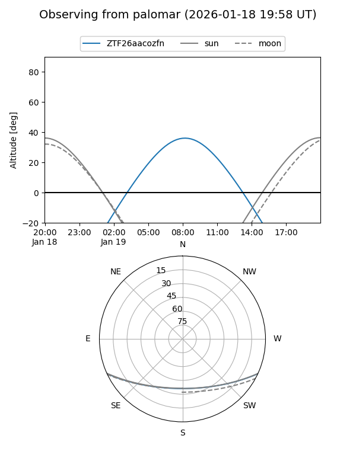

ZTF26aacozfn
Target ZTF26aacozfn at 2026-01-19 08:36
Aliases and brokers:
FINK: link
Lasair: link
ALeRCE: link
alt names
ZTF26aacozfn (ztf,fink_ztf)
Coordinates:
equatorial (ra, dec) = 124.4159,-20.43961
equatorial (HMS+DMS) = 08:17:39.83,-20:26:22.58
galactic (l, b) = (241.1572,+8.46305)
Flags:
Photometry:
last ztfg=19.32
1 ztfg detections
Lightcurve

Visibility


Additional plots